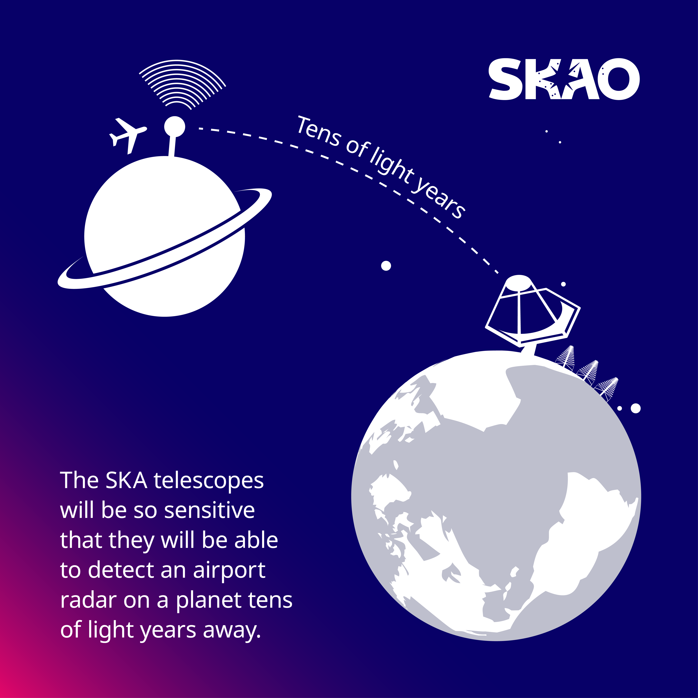
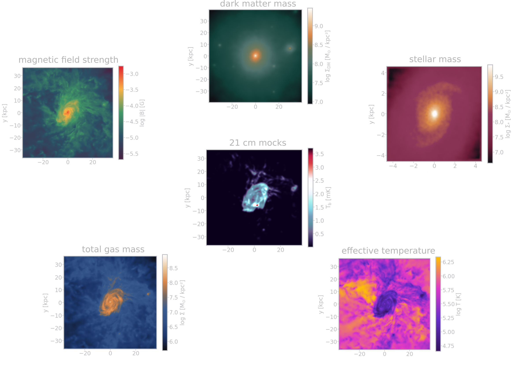
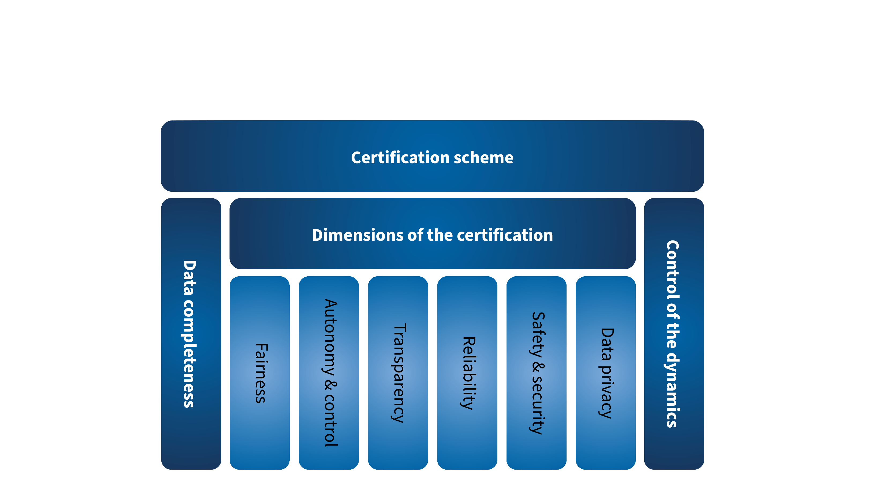

Explaining (with) AI:
the Universe and other stuff
2023/12/06 Wed
by
Philipp Denzel 
the Universe and other stuff
Philipp Denzel
Slides on my website
Link/QR code to the slides for later or to follow along
Projects at CAI
- SKA project (funding: SERI/SKACH, collab: IVS & IWI):
- Square Kilometer Array observatory & SKACH
- generative modelling of sky simulations ("mocks")
- my interests:
- generative deep learning,
- galactic evolution, dark matter…

Figure 1: ZHAW's SKACH team at CSCS in Lugano
Projects at CAI
- certAInty project (funding: Innosuisse, collab: RAI/IVS, IAMP & certX):
- Certification scheme for AI systems
- transparency of AI systems, regulations for AI systems
- my interests:
- XAI (in medicine), expanding my toolbox,
- the "politics" of AI…
Outlook
How to build a universe
- Cosmology: study of the observable Universe's
- origins and evolution
- large-scale structure
- physical laws
How to build a universe
- Astrophysics: ascertain the nature and dynamics of celestial bodies
- galactic dynamics (most common light sources in the sky)
- baryonic matter (stuff that interacts with light)
- radiation (aka light)
- dark matter (stuff that doesn't interact with light)
Unique scientific disciplines
- problem with the scientific method
- phenomenon ⟶ question
- theory/hypothesis ⟶ predictions
- test in experiment?
- analysis ⟶ conclusion
- publish & retest
- computational simulations replace experiments
- simulate the Universe…
- what are the initial conditions?
Astronomical scales
Sun light
Alpha Centauri
Young galaxies
Cosmic epochs
The Cosmic Microwave Background
Figure 2: 2006, Credit: ESA/Planck
The Cosmic Microwave Background
The Big Bang
- expansion of the Universe from an initial state (not from a singularity!)
- at 10-43 sec: Planck epoch (high density/energy state), size ~ 10-35 m
- at 10-37 sec: the gravitational force decouples, the Universe expands
- Inflation: exponential expansion and cooling
- at 10-32 sec: quark-gluon plasma, size ~ 1043 m
- symmetry-breaking phase transitions cause other forces to separate
- at 10-6 sec: baryons form, expansion and cooling continues
- at 379'000 years: Universe becomes opaque ⟶ CMB
Mollweide projection
Figure 3: 2006, Credit: NASA
{kind=link}
CMB anisotropies

Figure 4: 2006, Credit: ESA/Planck
Flagship cosmological particle simulations

Figure 5: 2016, Credit: D. Potter, J. Stadel, R. Teyssier
Cosmological simulations using hydrodynamics
Fluids
Radiation
SPH simulations: "zoom-ins"
B-field (TNG100), Credit: IllustrisTNG
SPH simulations: isolated galaxies
Theory ↔ Simulations ↔ Observations
Figure 6: 2023, Credit: SKAO
Radio telescopes
The Square Kilometer Array
Under construction
Figure 7: 2023, Credit: SKAO
Some numbers
on Proxima Centauri b

exascale supercomputers

over 7 Pbps
storing 750 PB/yr
Some facts
Figure 8: 2023, Credit: SKAO
Plans
🇿🇦 Meerkat National Park (150km extent)
🇦🇺 Murchison Observatory (75km extent)
Indigenous communities
Member nations
Figure 9: 2023, Credit: SKAO
Switzerland joined in January 19 2022

Figure 10: celebrating at the WEF 2022, Credit: SKACH
SKA in Switzerland
- leverage industry and technical partners
- providing expertise in
- the development of advanced receivers for dish antennas
- precision timing and automation
- signal processing
- Big Data
- contribute to the development of European SKA Regional Centre (SRC)
SKACH
Figure 11: Credit: SKACH
SKACH
Figure 12: Credit: SKACH
SKACH
Figure 13: Credit: SKACH
SKACH organization
Figure 14: Credit: SKACH
Deep learning sky simulations

Figure 15: Dataset of over 30'000 x 6 galaxy maps
Deep learning sky simulations

Figure 16: Use image domain translation models: observations (21cm) ↔ physical properties
cGANs (pix2pix or cycleGAN)
- generator - discriminator pairs
- learn the mapping from domain A ⇿ B and vice versa

pix2pix schema

Figure 17: Use pix2pix to generate dark matter maps from mock observations
Preliminary results
Ground truth

Predictions from pix2pix
Future plans
Score-based generative modeling

Figure 18: Score-based diffusion Song et al. (2021)
Uncertainty quantification by sampling from posterior
Credit: Ramzi et al. (2020)
Gravitational lensing
Explanations are important
There's an app for that
Machine bias
People tend to anthropomorphize
Regulations are coming…
Figure 19: New York Times 10/30/2023
Certification of AI systems
- Objectives:
- Development of a certification scheme for AI systems with specific objectives and means of compliance
- Suite of technical and scientific methods to verify relevant properties of the AI-based system as basis for the certification scheme
- Establish an explicit link between objectives from regulations and technical methods
- Combination of processes and algorithmic methods
Principle-based approach to Trustworthy AI
EU Artificial Intelligence Act
Risk-based approach
certAInty: a certification scheme for AI systems
certAInty: a certification scheme for AI systems

certAInty: a certification scheme for AI systems
certAInty: a certification scheme for AI systems
Use case: skin lesion classification
Use case: skin lesion classification
- ISO 23894 Artificial intelligence - Guidance on Risk management (4) + EASA Concept paper (2.2.1):
- Identify stakeholders which in turn identify goals and means of increasing Transparency & Explainability
- Doctor, patient, assessor, developer
- ISO 24028:2020 WD Overview of trustworthiness in artificial intelligence (10.3.3):
- The AI system should provide ex-ante and ex-post explanations, both means of explanations should be considered.
- Local explanations of the AI system’s decision for doctor → patient, through communication of relevant image features in images
- Global explanations for developer and assessor
Scenario: Physician
Scenario: Physician
Scenario: Physician
Scenario: Physician
Scenario: Physician
SHAP/Gradient-based methods
Scenario: Assessor
Scenario: Assessor
Class maximization
Take-home message
- Assessment and certification of AI systems:
- There is a gap between requirements and technical methods
- Need for innovation in linking means of compliance to processes and algorithmic methods
- Guidelines for developers and users
- Benchmarking of technical methods on real-world data
Contact